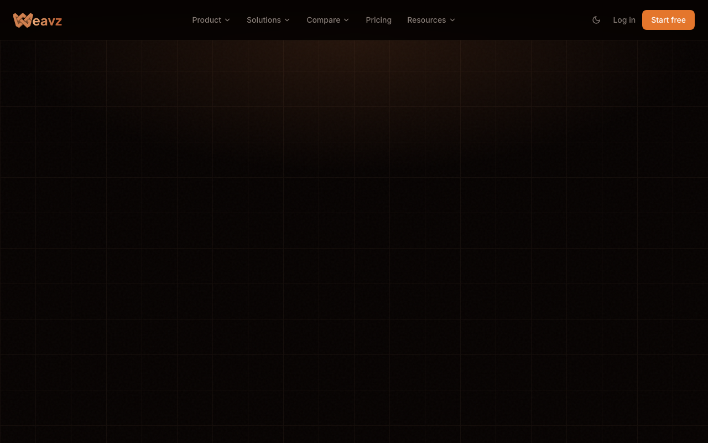
Think aloud: Landing page's heavy on AI agent messaging - MCP endpoints, Claude, ChatGPT. Not what I expected from a Zapier alternative pitch. Let me get straight to pricing, that's my first checklist item.
URL/context: https://weavz.io/
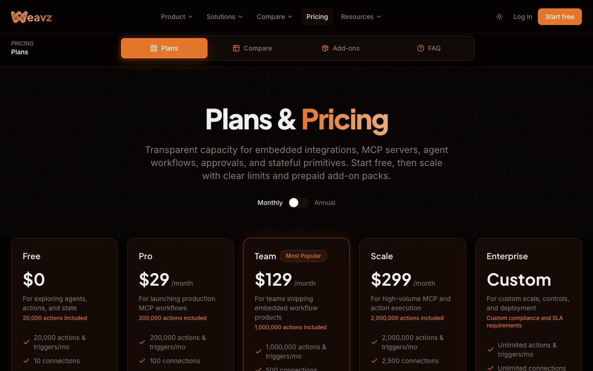
Think aloud: Human Gates and input partials showing up on Free and Pro tiers already - that's promising for approval workflows. But I need to see Team, Scale, and Enterprise to find audit trails and compliance certs before I can map governance to a tier.
URL/context: https://weavz.io/pricing

Think aloud: Team tier's marked Most Popular at $129, but I still haven't seen if audit logs or SSO show up higher up. Let me check the Compare tab here - might lay out governance features side by side across tiers.
URL/context: https://weavz.io/pricing
Think aloud: Let me open the Compare tab under Pricing - I want a side-by-side table showing which tier actually includes audit logs or approval gates, not just marketing bullets.
URL/context: https://weavz.io/pricing
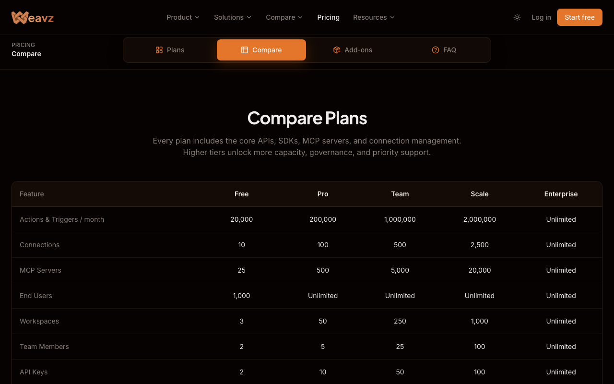
Think aloud: This table's got capacity numbers - retention, rate limits - but I still don't see SSO, audit logs, or approval workflows listed yet. Scrolling further down to find governance rows.
URL/context: https://weavz.io/pricing/compare
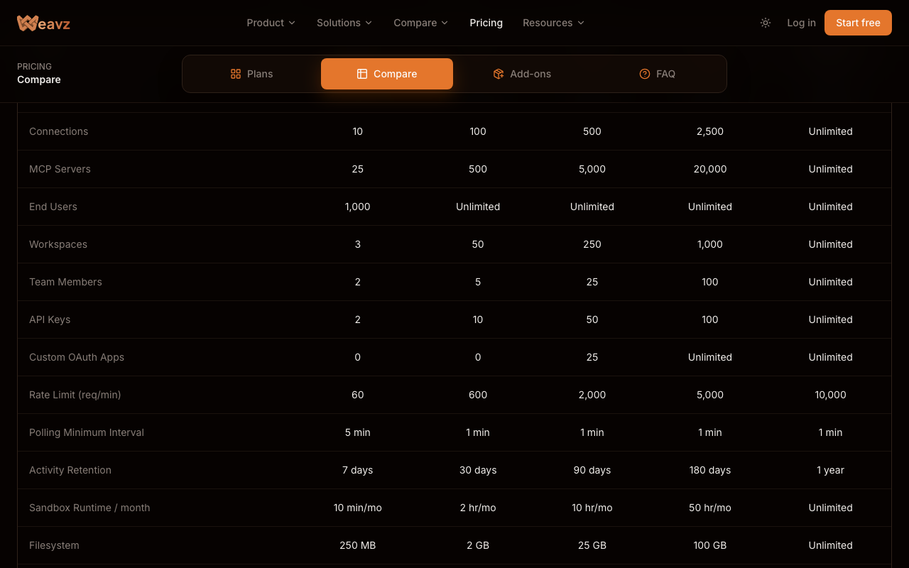
Think aloud: Still no SSO, audit log, or approval-gate rows in this table. Scrolling more - this is the row I actually need to see before I trust any tier.
URL/context: https://weavz.io/pricing/compare
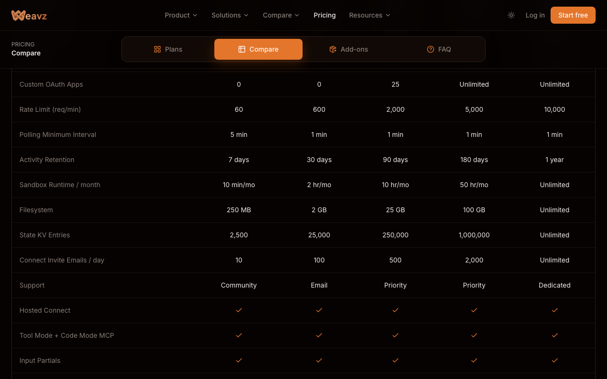
Think aloud: Still scrolling through capacity numbers - workspaces, filesystem, invite emails - but nothing yet on SSO, audit trails, or approval gates. This is the row I really need before I can map a tier to my compliance requirement.
URL/context: https://weavz.io/pricing/compare
Think aloud: Custom Deployment / SSO row only shows 'Custom' under the top tier — so SSO is enterprise-only, that's useful. But I still see nothing about audit logs, encryption, or approval workflows, and the footnote below looks like the table's end.
URL/context: https://weavz.io/pricing/compare
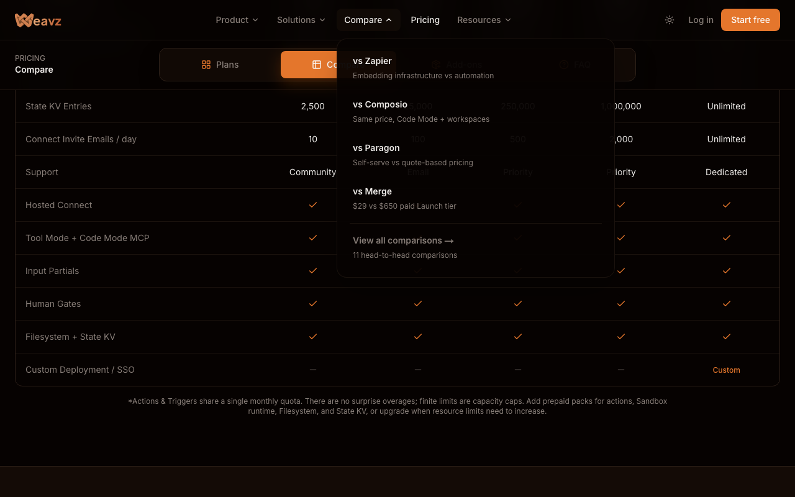
Think aloud: There it is - vs Zapier link, right where I need it. Let's see what they actually claim against Zapier Enterprise.
URL/context: https://weavz.io/pricing/compare
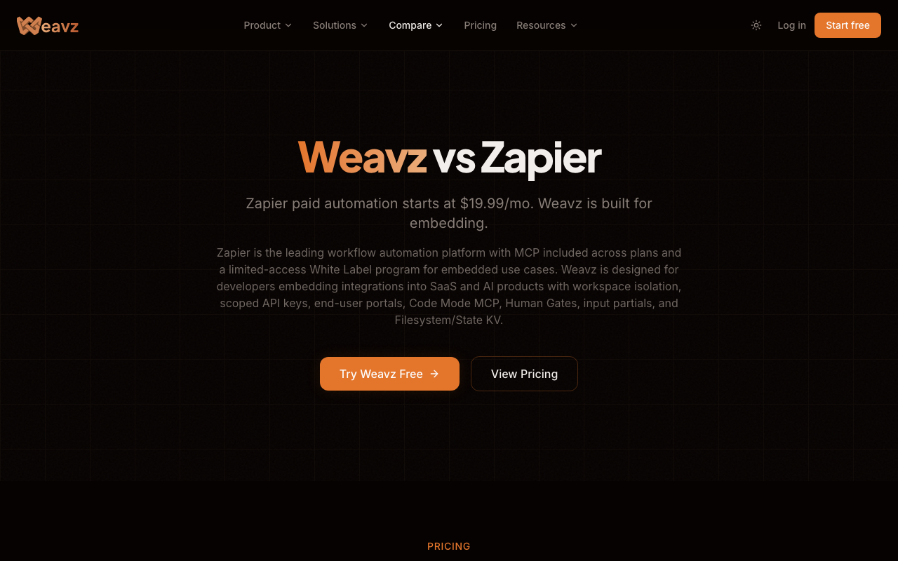
Think aloud: Table keeps going - Code Mode MCP, sandbox execution... still no row for audit logs, encryption, or approval workflows. Let me keep scrolling, this feature list might have more below.
URL/context: https://weavz.io/compare/zapier
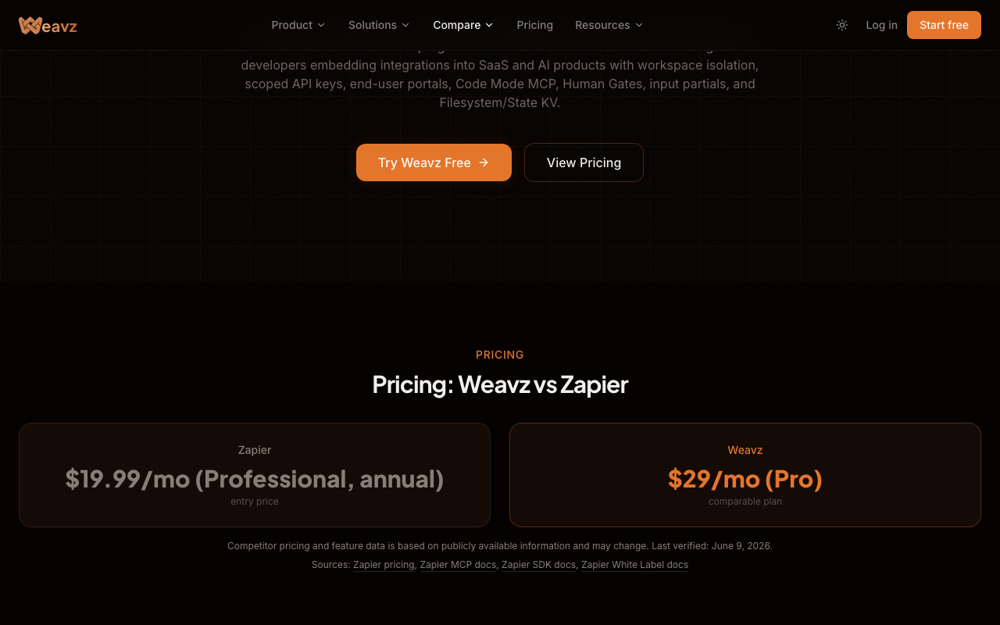
Think aloud: This page's just repeating the entry-price comparison I already saw. I still don't have a tier breakdown showing what's in Pro versus higher plans, or any security/compliance section. Let me go check the actual pricing page for tier details.
URL/context: https://weavz.io/compare/zapier
Think aloud: Wait, both Free and Pro list 'Human Gates + input partials' — that sounds like the approval-on-agent-actions feature we need. But I still don't see audit log or encryption mentioned anywhere in these bullet lists.
URL/context: https://weavz.io/pricing
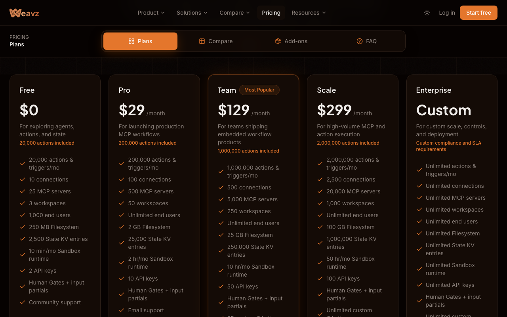
Think aloud: Pricing bullets don't mention audit logs, SSO, or encryption anywhere. Let me check the FAQ tab — maybe compliance details are buried there instead of on the plan cards.
URL/context: https://weavz.io/pricing
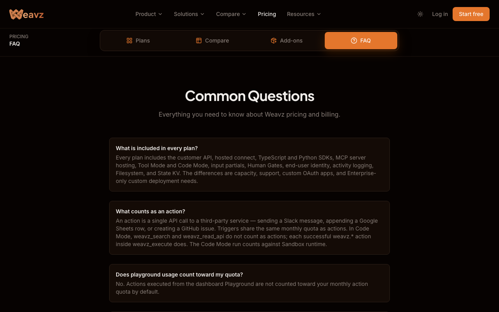
Think aloud: Good — every plan includes Human Gates and activity logging, so approval and audit trail aren't locked behind Enterprise. But still nothing here about SOC2, encryption, or SSO. Let me check the footer for a security or trust page before I give up on that.
URL/context: https://weavz.io/pricing/faq
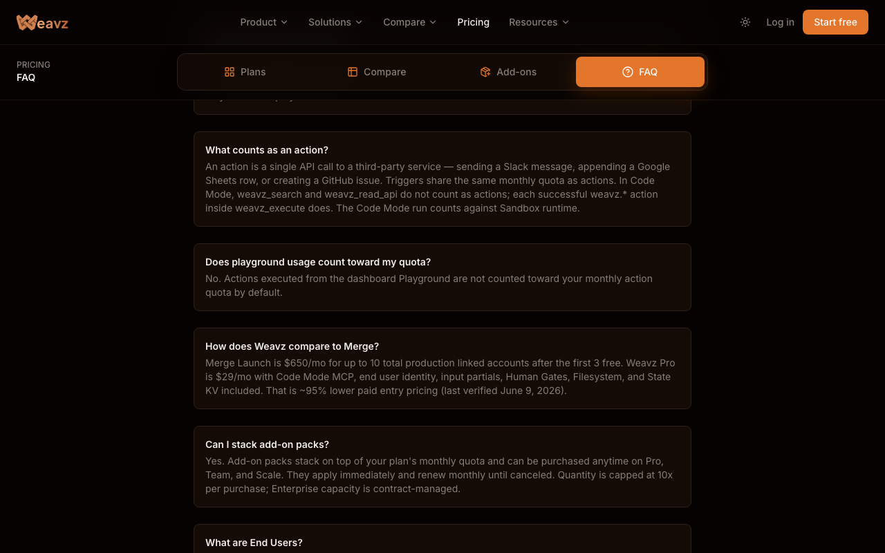
Think aloud: Still nothing on SOC2, encryption, or SSO in this FAQ. audit' in the tagline, but I need an actual security or trust page, not a slogan.
URL/context: https://weavz.io/pricing/faq
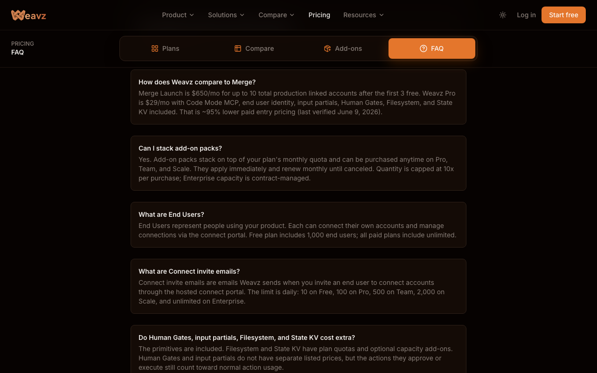
Think aloud: No Security or Trust link in this footer area. Let me check the Resources menu up top before I give up on finding compliance proof.
URL/context: https://weavz.io/pricing/faq
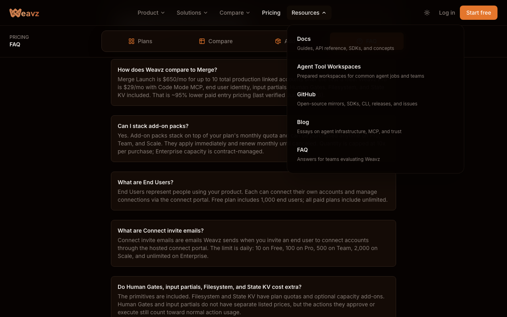
Think aloud: Resources menu just shows Docs, Agent Workspaces, GitHub, Blog, FAQ. No Security or Compliance link here either. Let me try Docs — maybe there's an architecture or security section buried in the guides.
URL/context: https://weavz.io/pricing/faq
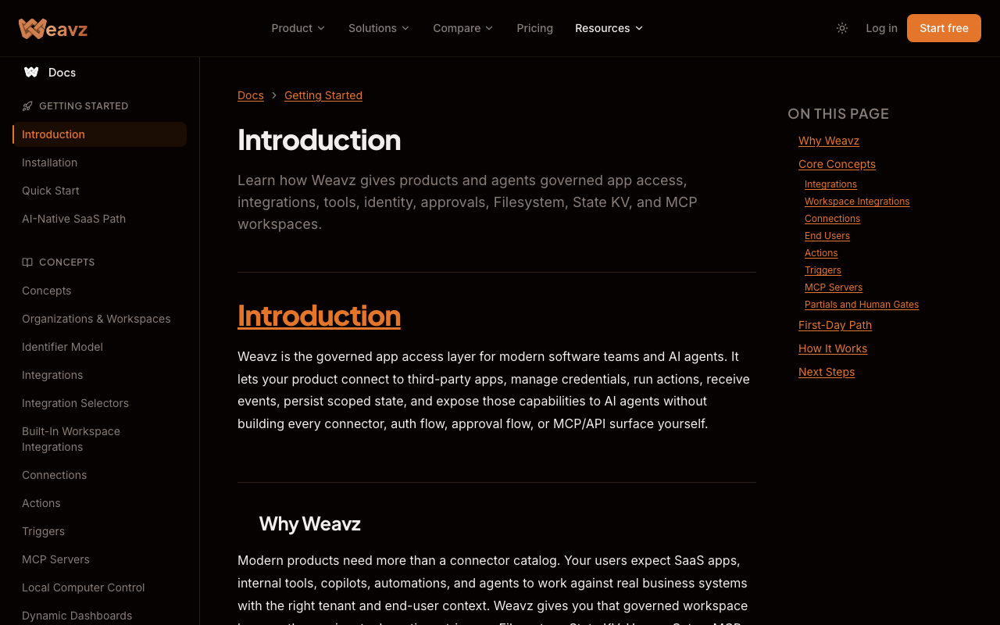
Think aloud: Human Gates — that's exactly the approval mechanism I need for agent actions. Let me open that before hunting further for a security page.
URL/context: https://weavz.io/docs/getting-started
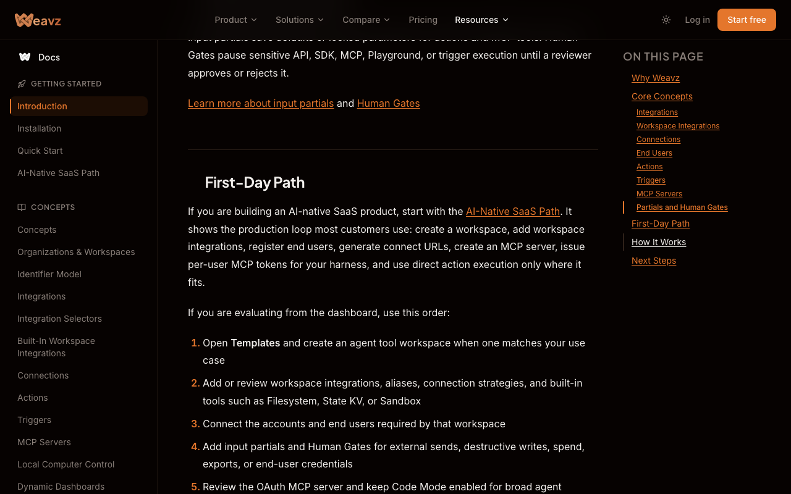
Think aloud: Human Gates link right here — this is the piece I actually need, pausing agent actions for approval before execution. Let me open it and see if there's real detail, not just a mention.
URL/context: https://weavz.io/docs/getting-started#partials-and-human-gates
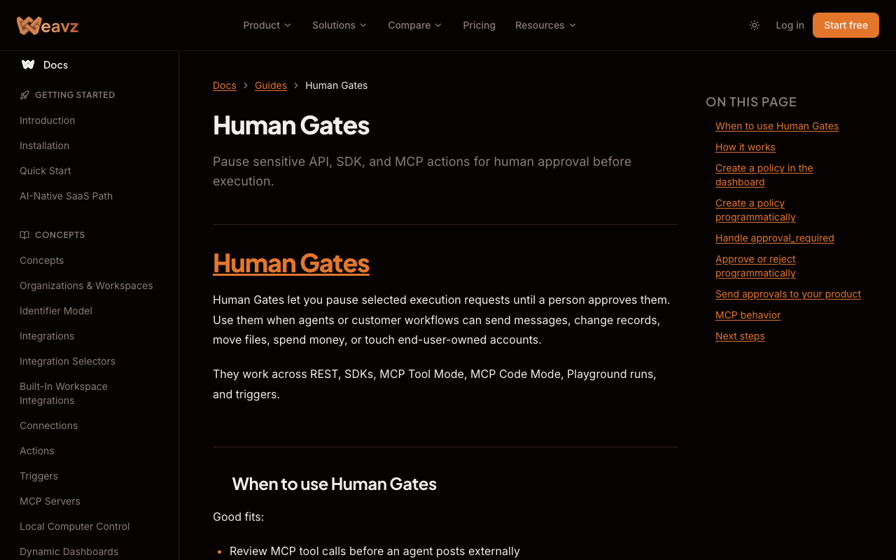
Think aloud: How it works — I want the real mechanics here, not just a marketing paragraph. If this shows an actual approval workflow with audit logging, that's useful evidence for my security team.
URL/context: https://weavz.io/docs/guides/human-gates
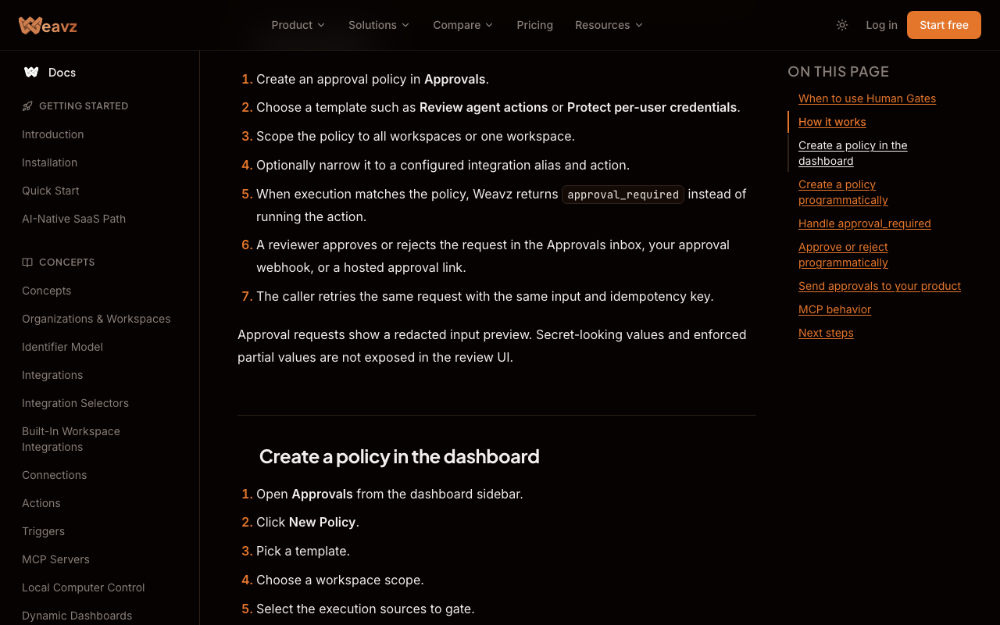
Think aloud: This whole Human Gates page is solid on the approval mechanics — policy, redacted preview, idempotency key. But I still haven't seen SOC2, encryption at rest, or audit log retention mentioned anywhere. Let me check Resources for a security or trust page before I decide.
URL/context: https://weavz.io/docs/guides/human-gates#how-it-works
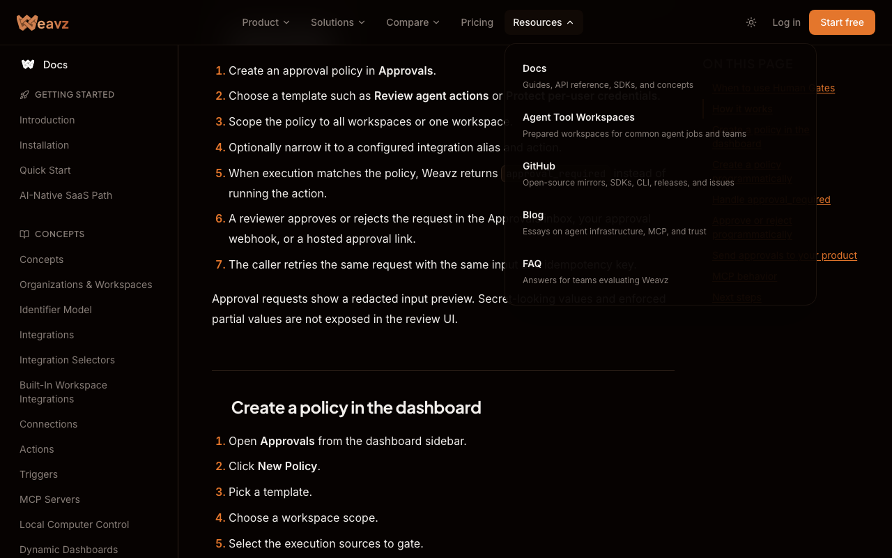
Think aloud: Let me check the FAQ — if there's a real compliance answer there about SOC2, encryption, audit retention, that settles it. Otherwise I'm going to have to treat governance evidence as missing.
URL/context: https://weavz.io/docs/guides/human-gates#how-it-works
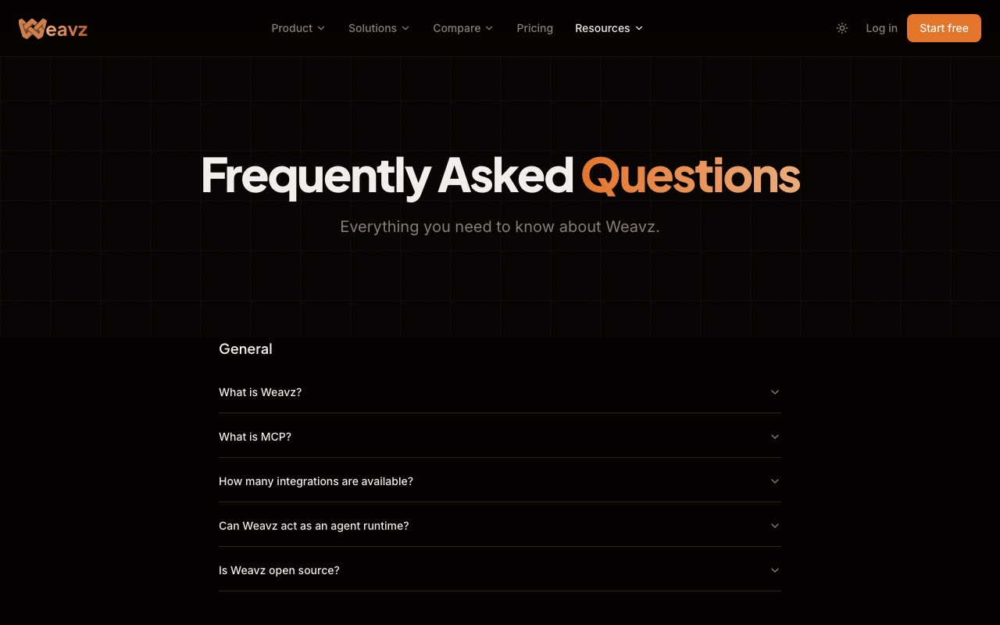
Think aloud: a whole Security section down there — 'Is my data encrypted?', 'Can I run on my own infrastructure?', 'Does Weavz store my users' data?'. That's exactly the compliance evidence I've been hunting for. Let me open those.
URL/context: https://weavz.io/faq
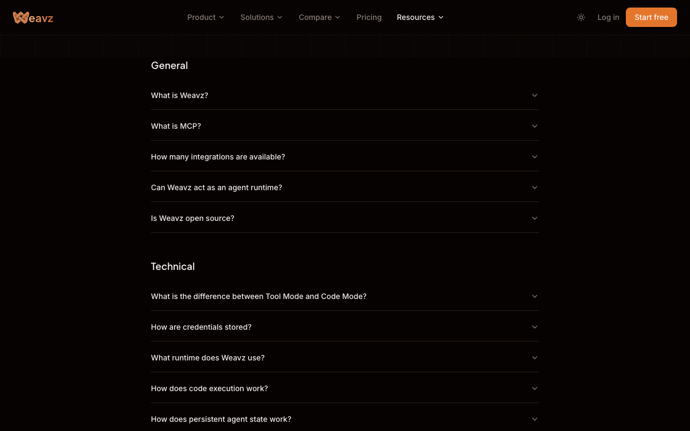
Think aloud: I'm still in General and Technical questions here — no Security section visible yet. I need to scroll further to reach the encryption and data storage questions I saw mentioned.
URL/context: https://weavz.io/faq
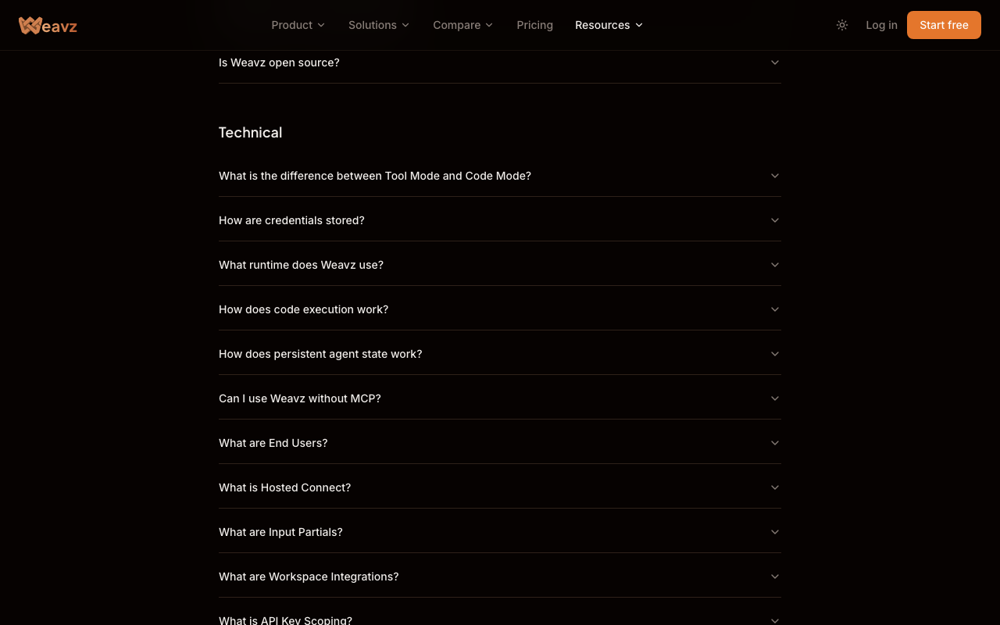
Think aloud: Still not seeing the encryption question as a clickable item yet — just API Key Scoping at the bottom. The Security section must be just past this. Scrolling once more.
URL/context: https://weavz.io/faq

Think aloud: Rather than typing addresses, I want to get there through the menus, tabs, and links on the page — I should look around, and scroll if needed.
URL/context: https://weavz.io/faq
Think aloud: No Security heading anywhere in this FAQ — just runtime, hosted connect, key scoping, pricing questions. Maybe it's under Product menu instead, let me check there before I give up on finding compliance info.
URL/context: https://weavz.io/faq
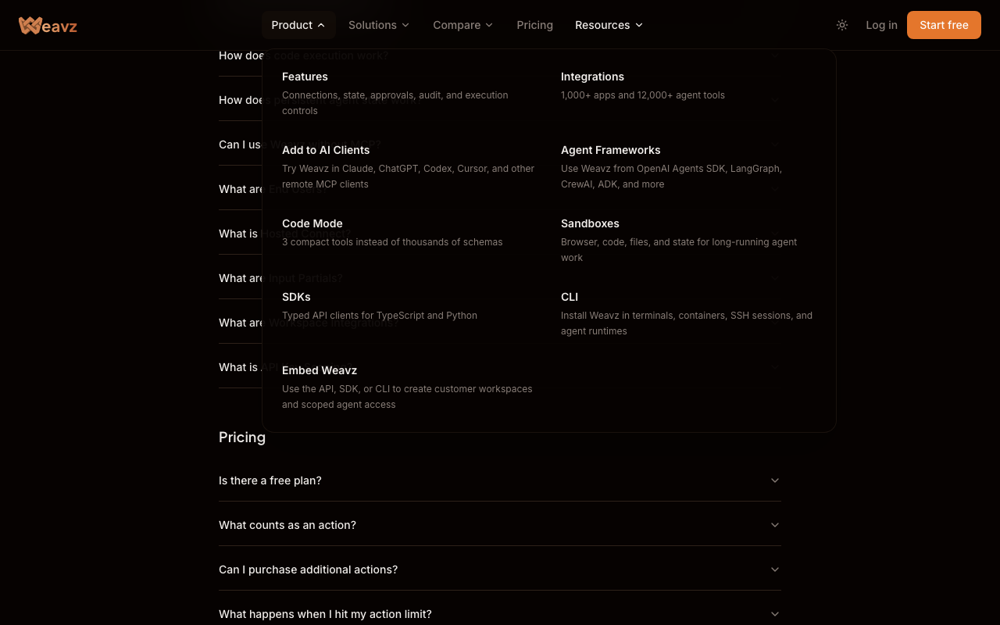
Think aloud: Wait — Features says "approvals, audit, and execution controls" right in the menu. That's exactly the governance language I've been hunting for. Let me open that instead of circling FAQ again.
URL/context: https://weavz.io/faq
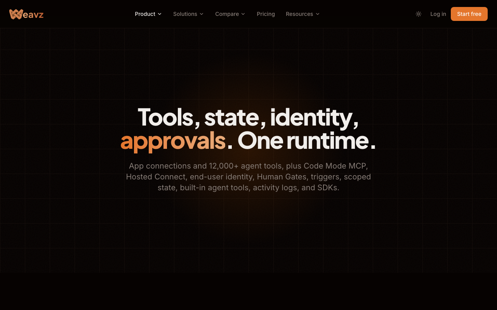
Think aloud: Human Gates section actually shows the approval flow — pause, redacted review, then resume. That's real governance evidence, not just marketing copy. But I still haven't seen anything about encryption, SOC2, or audit log retention anywhere.
URL/context: https://weavz.io/features
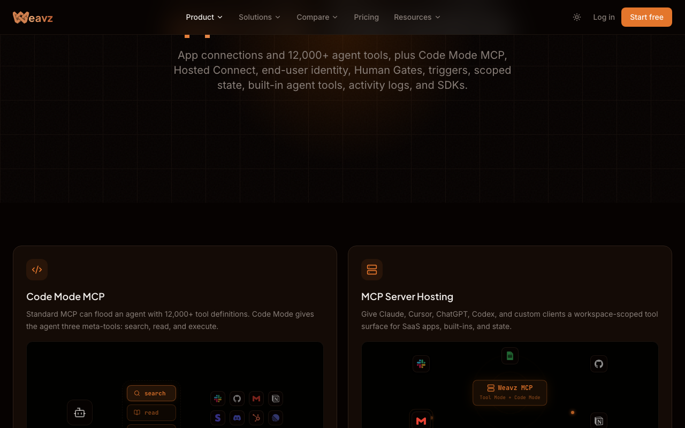
Think aloud: Human Gates flow with redacted review and approval is solid evidence for audit trail, but I still don't see words like SOC2, encryption at rest, or audit log retention anywhere. Let me scroll further down this Features page before I give up looking.
URL/context: https://weavz.io/features
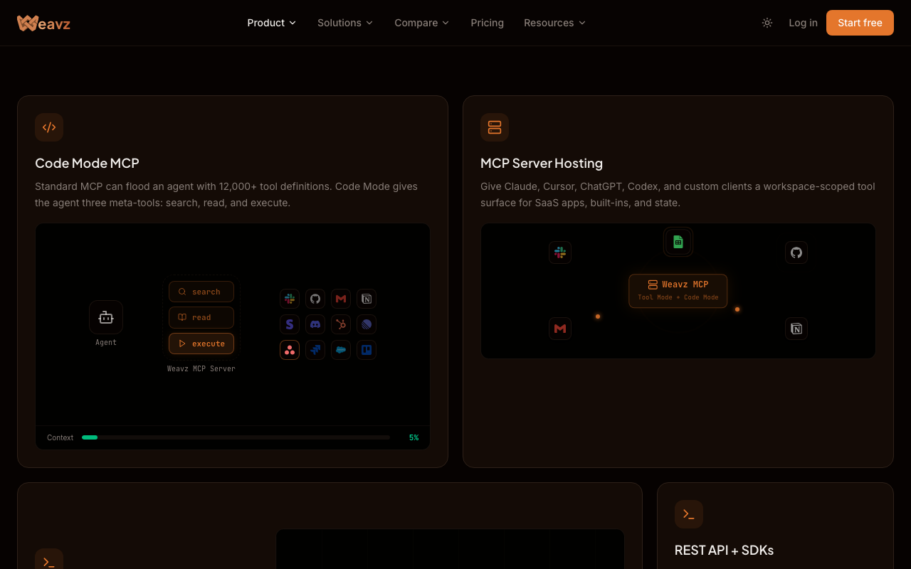
Think aloud: I still haven't properly checked app coverage for our actual stack — Slack, Salesforce, Workday, ServiceNow, the works. Let me open Product menu to find an integrations list before I settle on a decision.
URL/context: https://weavz.io/features
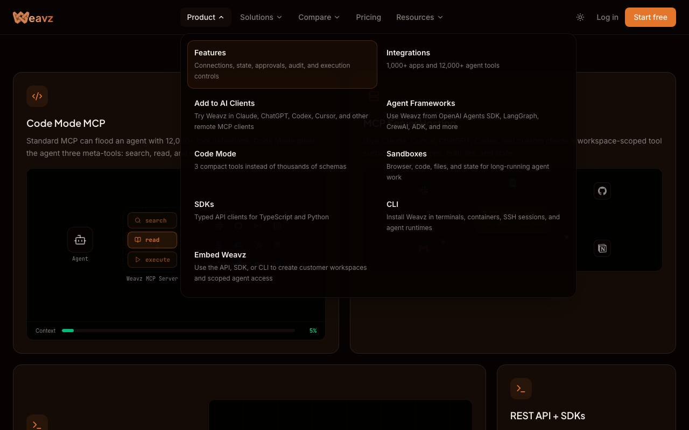
Think aloud: There it is — Integrations, 1,000+ apps and 12,000+ agent tools. Let me open that to check if our stack like Salesforce, Slack, ServiceNow, Workday is actually listed.
URL/context: https://weavz.io/features
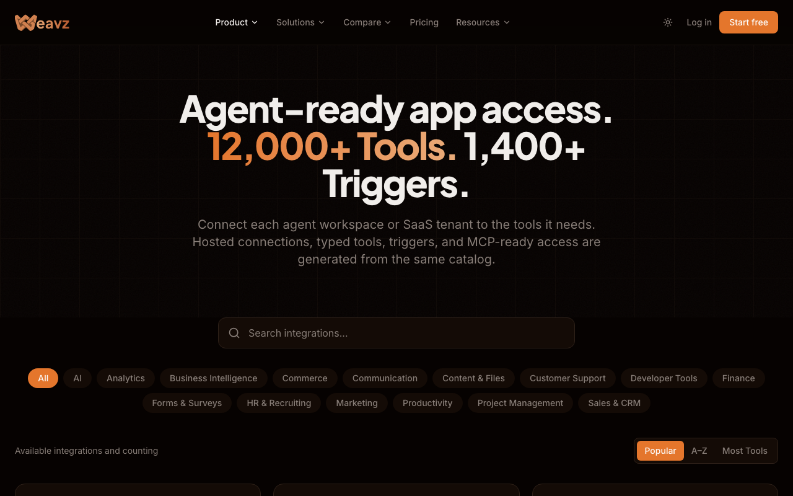
Think aloud: Good — Slack, Salesforce, HubSpot, GitHub, Stripe, Gmail, Zoom are all here with real tool and trigger counts, that covers most of our stack. But I still haven't seen how they position against Zapier directly, and I never found hard compliance evidence like SOC2 or audit logs on this site — that's the real gap for a governance sign-off.
URL/context: https://weavz.io/integrations
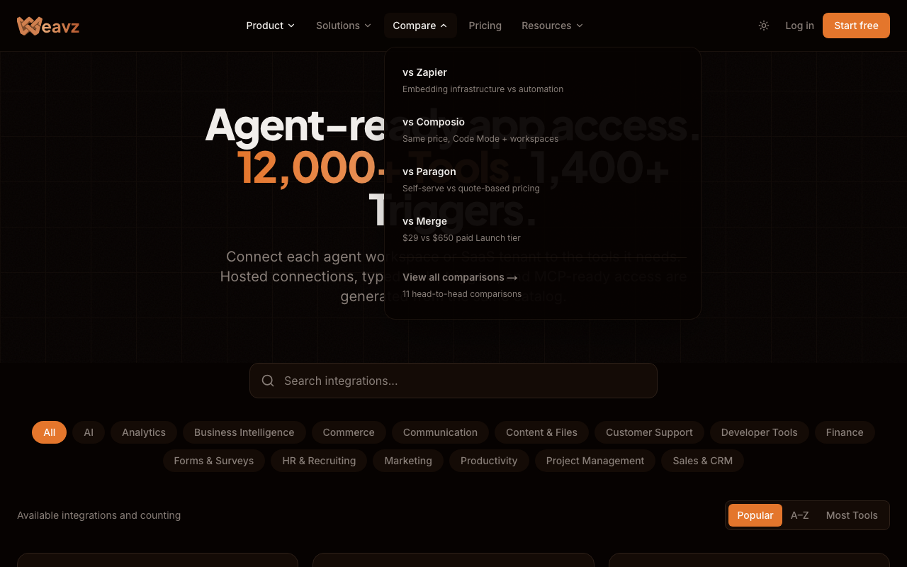
Think aloud: Finally — vs Zapier is right here. Let me open this before I run out of runway, since I still need to see how they frame the difference for governance, not just cost.
URL/context: https://weavz.io/integrations

Think aloud: I've now got the Zapier comparison table, pricing, and app coverage — but nowhere on this whole site have I seen a SOC2, ISO 27001, or audit certification badge. Features like Human Gates and audit logging sound right, but sounding right isn't proof for my security team.
URL/context: https://weavz.io/compare/zapier